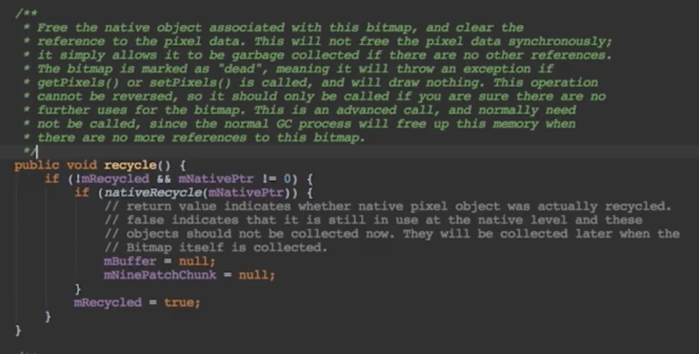
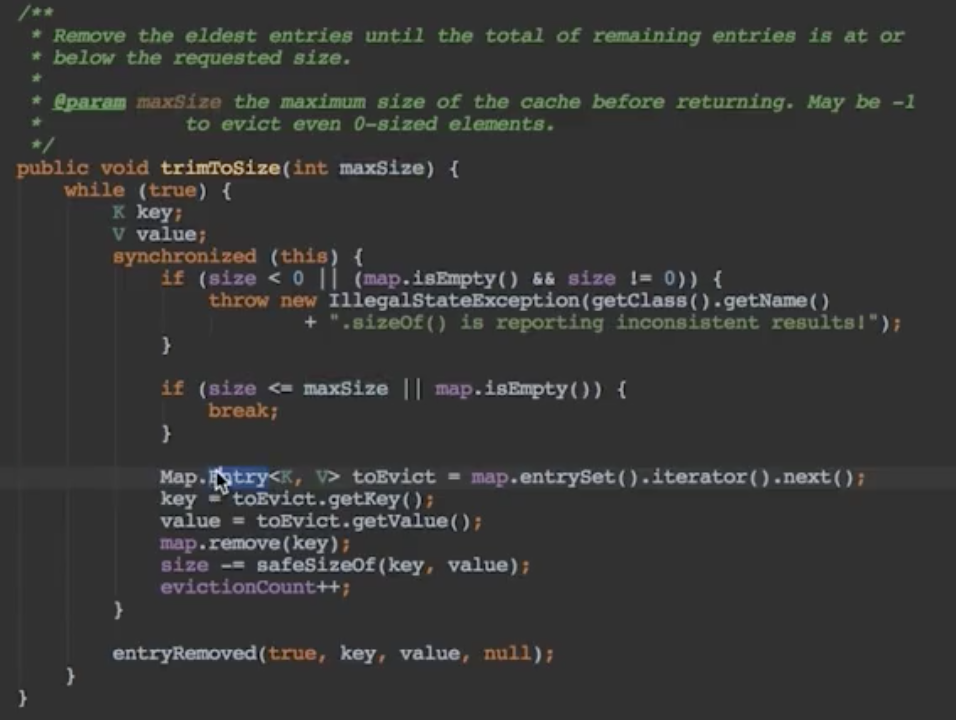

ANR
是什么
Application Not Responding
Activity是5秒、广播是10秒
产生的原因
原因程序的响应是由Activity Manager和WindowManager系统服务监视的
- 主线程被IO操作阻塞（4.0后网络IO不允许在主线程中）
- 主线程存在耗时计算
Android中哪些操作是在主线程是
- Activity的所有生命周期回调都是执行在主线程的
- Service是默认执行在主线程
- BroadcastReceiver的onReceive回调
- 没有使用子线程的looper的handler的handleMessage、post(Runnable)是执行在主线程的
- AsyncTask的回调除了doInBackground，其他都是执行在主线程
如何避免ANR
- 使用AsyncTask处理耗时的IO操作
- 使用Thread或者HandlerThread提高优先级
- 使用Handler来处理工作线程的耗时操作
- Activity的onCreate和onResume中尽量避免耗时的代码
捕获与分析
OOM
是什么
当前占用的内存加上我们申请的内存资源超过了虚拟机的最大内存限制就会抛出
易混淆的概念
内存溢出/内存抖动/内存泄漏
- 内存抖动短时间内大量对象被创建又被马上释放
- 垃圾对象已经没有被其他地方引用到了但是缺可以直接或间接的引用到GC roots
解决办法
Bitmap
- 图片显示：加载合适尺寸，滑动的时候不请求网络
- 及时释放内存：包含两部分内存（Java区和C区）
- 图片压缩
- inBitmap属性：使用已经存在内存区域而不是重新设置内存区域，即使有成百上千的图片，也只会占用屏幕能放下的图片内存
- 捕获异常
其他地方
- listView：复用convertview/使用lru
- 避免在onDraw方法里执行对象的创建
- 谨慎使用多进程
Bitmap
recycle
bitmap需要回收java跟Native的内存。recycle释放bitmap内存的时候会释放跟bitmap有关的Native内存，同时清理有关数据对象的引用，不是立即清理只是给垃圾回收发送消息指令。recycle之后再调用bitmap相关其他方法会报错，recycle操作也是不可逆的。官方建议不主动调用

LRU
清除最近最少使用的缓存对象。内部有一个LinkedHashMap，提供了get、put方法完成缓存的添加和获取。当缓存满的时候，调用trimToSize方法，移除较早的缓存对象并且添加新的缓存对象
trimToSize方法

缓存满的时候移除并且添加新的缓存对象
计算inSampleSize及缩略图
inJustDecodeBounds属性，只解析尺寸，不实际加载。
public class BitmapUtils {
// 根据maxWidth, maxHeight计算最合适的inSampleSize
public static int calculateInSampleSize(
BitmapFactory.Options options, int reqWidth, int reqHeight) {
// Raw height and width of image
final int height = options.outHeight;
final int width = options.outWidth;
int inSampleSize = 1;
if (height > reqHeight || width > reqWidth) {
if (width > height) {
inSampleSize = Math.round((float)height / (float)reqHeight);
} else {
inSampleSize = Math.round((float)width / (float)reqWidth);
}
}
return inSampleSize;
}
//缩略图
public static Bitmap thumbnail(String path,
int maxWidth, int maxHeight, boolean autoRotate) {
BitmapFactory.Options options = new BitmapFactory.Options();
options.inJustDecodeBounds = true;
// 获取这个图片的宽和高信息到options中, 此时返回bm为空
Bitmap bitmap = BitmapFactory.decodeFile(path, options);
options.inJustDecodeBounds = false;
// 计算缩放比
int sampleSize = calculateInSampleSize(options, maxWidth, maxHeight);
options.inSampleSize = sampleSize;
options.inPreferredConfig = Bitmap.Config.RGB_565;
options.inPurgeable = true;
options.inInputShareable = true;
if (bitmap != null && !bitmap.isRecycled()) {
bitmap.recycle();
}
bitmap = BitmapFactory.decodeFile(path, options);
return bitmap;
}
//保存bitmap
public static String save(Bitmap bitmap,
Bitmap.CompressFormat format, int quality, File destFile) {
try {
FileOutputStream out = new FileOutputStream(destFile);
if (bitmap.compress(format, quality, out)) {
out.flush();
out.close();
}
if (bitmap != null && !bitmap.isRecycled()) {
bitmap.recycle();
}
return destFile.getAbsolutePath();
} catch (FileNotFoundException e) {
e.printStackTrace();
} catch (IOException e) {
e.printStackTrace();
}
return null;
}
// 保存到sd卡
public static String save(Bitmap bitmap,
Bitmap.CompressFormat format, int quality, Context context) {
if (!Environment.getExternalStorageState()
.equals(Environment.MEDIA_MOUNTED)) {
return null;
}
File dir = new File(Environment.getExternalStorageDirectory()
+ "/" + context.getPackageName() + "/save/");
if (!dir.exists()) {
dir.mkdirs();
}
File destFile = new File(dir, UUID.randomUUID().toString());
return save(bitmap, format, quality, destFile);
}
}
三级缓存
网络、本地、内存
UI卡顿
原理
60fps，16ms
每隔16ms发出信号触发UI渲染，如果每次都成功即可达到每秒60帧，1000/60=16
overdraw
过度绘制，屏幕上某个像素在同一帧被绘制多次，多出现在多层次的UI
原因
- 人为的在UI线程中做轻微耗时操作，导致UI线程卡顿
- 布局Layout过于复杂，无法在16ms内完成渲染
- 同一时间动画执行次数过多，导致CPU或GPU负载过重
- View过度绘制，导致某些像素在同一帧时间内被绘制多次，从而使CPU或GPU负载过重
- View频繁的触发measure、layout，导致measure、layout累计耗时过多及整个View频繁的重新渲染
- 内存频繁触发GC（会停止线程），导致暂时阻塞渲染操作
- 冗余资源及逻辑等导致加载和执行缓慢
- ANR
总结
- 布局优化（使用include、merge，gone替代invisible，使用weight替代长和宽，Item非常复杂嵌套时使用自定义view）
- 列表及Adapter优化（复用，滑动的时候不操作）
- 背景和图片等内存分配优化
- 避免ANR
内存泄漏
检测工具
LeakCannary、MAT
内存泄漏、内存溢出
- 内存溢出：超出了虚拟机分配的内存
- 内存泄漏：某个不再使用的对象被其他实例引用，不能被回收
原因
该回收的对象不能被回收
Android常见的内存泄漏
- 单例
- handler
- 线程（匿名内部类持有外部类的引用）
- webview（双进程解决）
单例
长生命周期对象持有段生命周期对象的引用，导致短生命周期对象无法被回收
public class AppManager {
//有内存泄漏的问题：
private static AppManager instance;
private Context context;
private AppManager(Context context) {
this.context = context;
}
public static AppManager getInstance(Context context) {
if (instance == null) {
//传入的Activity回收时由于被单例持有无法回收
instance = new AppManager(context);
}
return instance;
}
//修复内存泄漏的写法：
private static AppManager instance;
private Context context;
private AppManager(Context context) {
this.context = context.getApplicationContext();// 使用Application 的context
}
public static AppManager getInstance(Context context) {
if (instance == null) {
instance = new AppManager(context);
}
return instance;
}
}
匿名内部类handler
public class MainActivity extends AppCompatActivity {
//容易造成内存泄漏的写法：
//非静态内部类持有外部类的引用（Activity）
private Handler mHandler = new Handler() {
@Override
public void handleMessage(Message msg) {
//...
}
};
@Override
protected void onCreate(Bundle savedInstanceState) {
super.onCreate(savedInstanceState);
setContentView(R.layout.activity_main);
loadData();
}
private void loadData() {
//...request
Message message = Message.obtain();
mHandler.sendMessage(message);
}
static class TestResource {
//该静态实例持有activity的引用，内存资源得不到正常回收，应该设为静态内部类
// private static final String TAG = "";
// //...
}
//修复内存泄漏的方法：
//1.设为静态内部类2.在handler内部持有外部类Activity的弱引用3.销毁时移除
private MyHandler mHandler = new MyHandler(this);
private TextView mTextView ;
private static class MyHandler extends Handler {
private WeakReference<Context> reference;
public MyHandler(Context context) {
reference = new WeakReference<>(context);
}
@Override
public void handleMessage(Message msg) {
MainActivity activity = (MainActivity) reference.get();
if(activity != null){
//activity.mTextView.setText("");
}
}
}
@Override
protected void onCreate(Bundle savedInstanceState) {
super.onCreate(savedInstanceState);
setContentView(R.layout.activity_main);
loadData();
}
private void loadData() {
//...request
Message message = Message.obtain();
mHandler.sendMessage(message);
}
@Override
protected void onDestroy() {
super.onDestroy();
mHandler.removeCallbacksAndMessages(null);
}
}
内存管理
内存管理机制概述
数据存储区域，可以被操作系统调度的资源
分配机制，操作系统为每一个进程合理的分配内存资源，保证每个进程正常运行
回收机制，系统内存不足时，回收再分配，保证新的进程正常运行
Android内存管理
分配机制，一开始不会分配太多的内存，随着APP运行内存不够时，分配额外大小（有限制的分配），保证更多的进程存活，从而提高体验
回收机制，进程有优先级，后台进程存放在缓存列表中，LRU判断杀死。系统会判断杀死哪些进程回收更多内存
内存管理机制特点
- 更少的占用内存
- 在合适的时候，合理的释放系统资源
- 在系统内存紧张时，能释放掉大部分不重要的资源，来为Android系统提供可用的内存
- 能够很合理的在特殊生命周期中，保存或者还原重要数据，以至于系统能够正确的重新恢复该应用
内存优化方法
- Service完成任务后，尽量停止它
- 在UI不可见的时候，释放掉一些只有UI使用的资源
- 在系统内存紧张时，能释放掉大部分不重要的资源，来为Android系统提供可用的内存
- 避免滥用Bitmap导致的内存浪费
- 使用针对内存优化过的数据容器
- 少用枚举
- 避免使用依赖注入框架
- 使用ZIP对齐的APK
- 使用多进程（双刃剑）
冷启动优化
什么是冷启动
冷启动就是在启动应用前，系统中没有该应用的任何进程信息
热启动
用户使用返回键退出应用，然后马上又重新启动应用。应用进程是保留在后台的
冷启动时间的计算
从应用启动（创建进程）开始计算，到完成视图的第一次绘制（即Activity内容对用户可见）为止
冷启动流程
- Zygote进程中fork创建出一个新的进程
- 创建和初始化Application类、创建MainActivity类
- inflate布局、onCreate、onStart、onResume都走完
- contentView的measure、Layout、draw显示在界面上
Application的构造器方法->attachBaseContext()->oncreate()->Activity的构造方法->onCreate()->配置主题中背景等属性->onStart()->onResume()->测量布局绘制显示在界面上
冷启动优化
- 减少onCreate()方法的工作量
- 不要让Application参与业务的操作
- 不要在Application进行耗时操作
- 尽量不要以静态变量的方式在Application中保存数据
- 减少布局的复杂性
- 懒加载主线程资源初始化
其他优化
android不用静态变量存储数据
- 静态变量等数据由于进程已经被杀死而被初始化
- 使用其他数据传输方式：文件、sp、contentProvider
sharepreference
- 不能跨进程同步
- 存储文件过大问题（界面卡顿、临时变量太多内存抖动）
- 读取频繁的key最好放到单独的sp中
内存对象序列化
序列化：将对象的状态信息转化为可以存储或传输的形式的过程
- Serializeble：产生大量临时变量，引起频繁的GC，造成内存抖动
- Parcelable：磁盘上的数据不行，适用于进程间通信，性能更好